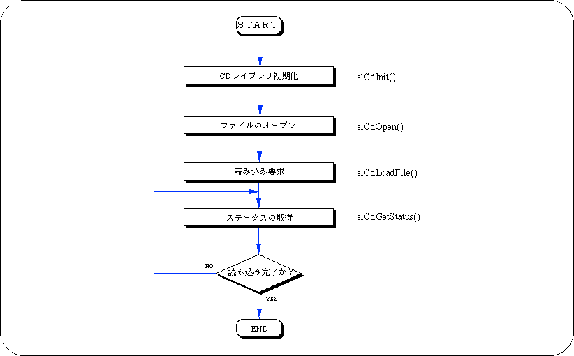

Return to previous page | Return to menu | Go to next page
The flow of reading data from CD-ROM is as follows.

Since CD-ROM access involves a mechanical operation, the data is not read into memory at the moment when a read request is made. Also, the speed at which data is read from the CD-ROM is very low compared to the CPU speed. SGL uses a method of accessing the CD-ROM while monitoring the read status so that programs other than CD-ROM access can be executed during this waiting time.
CD-ROM consists of units called sectors. In general, the sector is 2048 bytes (FORM1), but it may not be a problem even if it is read slightly wrong like music data. If you really want to secure the transfer capacity, you can use 2324 bytes (FORM2). I can do it. Each sector in the same file has sub-header information consisting of channel number, submode, and coding information. A simple representation of the sector structure is as follows.

SGL has a function to classify data according to the subheader. In SGL, this information is called “key”. The submode and coding information are meaningful for each bit. In SGL, only the sector with the specified bit of 1 is selected and read.